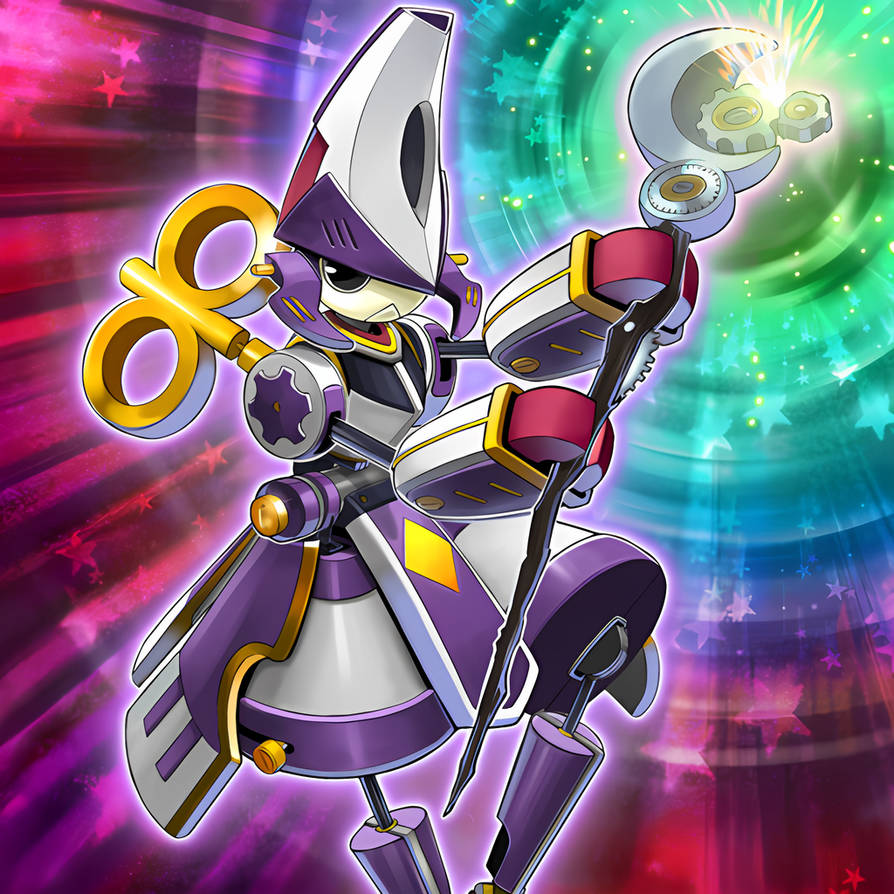

WIND-UP MAGICIAN


[SPELLCASTER / EFFECT]
If the effect of a "Wind-Up" monster is activated, except "Wind-Up
Magician": You can Special Summon 1 Level 4 or lower "Wind-Up"
monster from your Deck in face-up Defense Position. This effect can
only be used once while this card is face-up on the field.
ATK/ 600 DEF/ 1800